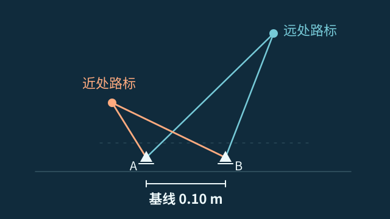
视觉 SLAM 的定位与建图原理
从左右移动时物体的视差出发，理解相机怎样估计自身运动、恢复路标位置，并在绕回起点时校正轨迹。

从左右移动时物体的视差出发，理解相机怎样估计自身运动、恢复路标位置，并在绕回起点时校正轨迹。

用两组桌角坐标手算一次配准，再看复杂场景中的旋转、初始位姿、点到面残差和几何退化。
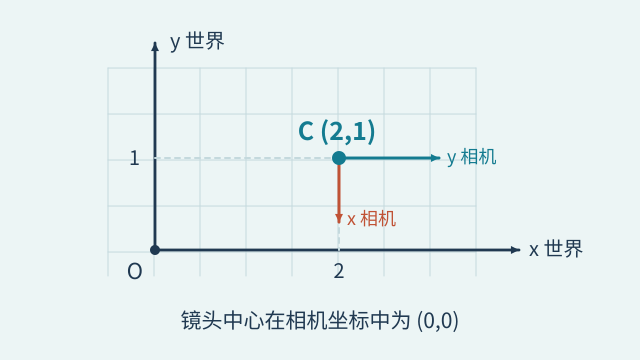
从两个坐标系出发推导相机中心 C = −Rᵀt，手算一次旋转，并把三维点投回像素检验方向。

用一堵墙和一次匀速扫描解释点的采样时刻、IMU 运动估计，以及如何把一帧点云归到同一个参考时刻。
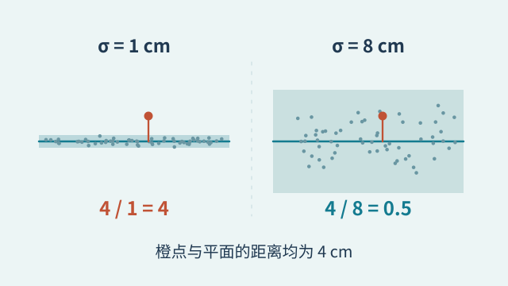
从盒子里的点怎样确定一张平面讲起，用有误差的尺读数演算标准化残差，理解点到面约束的权重。

把一块小纹理在两帧间的亮度差写成误差，再用三个灰度读数看清纹理方向与曝光变化带来的歧义。

把图像检索、局部特征匹配与二维到三维的位姿估计串成一次定位，用重投影和独立深度复核候选地点。

从一圈距离测量构造地点描述，区分候选检索、几何对齐与连续观察，理解什么时候只能保留多个可能位置。
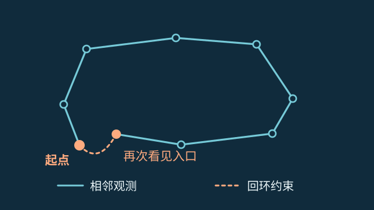
把走廊往返画成由关键帧和相对运动组成的图，手算两段里程的折中解，再辨别真假回环。

用两次独立的楼层扫描建立跨图约束，计算一个二维变换，并通过未参与配准的结构检查拼接结果。
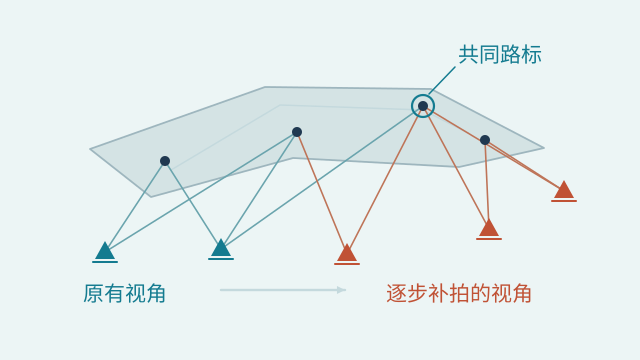
区分新照片定位、三角化和联合优化，从两段有重叠的拍摄理解怎样扩展模型并复查旧视角。

沿一条测距射线手画三类空间，理解为什么空白点云无法直接表示通道，以及多次观测如何更新体素。
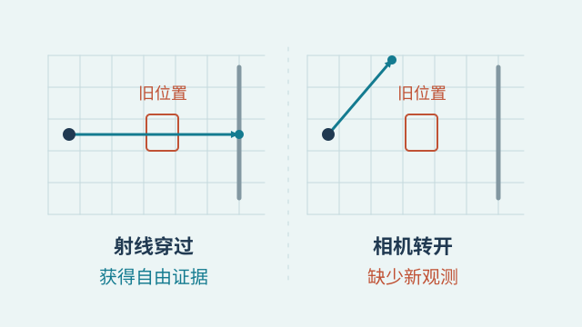
把一把临时搬到过道里的椅子写入局部地图，分清命中、射线清除、过期和移出滚动窗口各自表示什么。

利用已知距离、地面平面和前进方向恢复模型的米制参考系，再用独立量测核对地图里的位置与通行宽度。
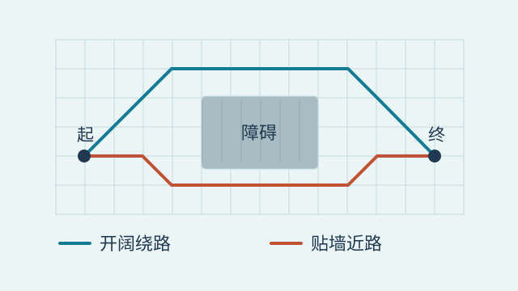
先把体素地图变成机器人能够移动的图，再手算一次 A* 排序，比较绕行距离与贴近障碍的代价。

理解像素格式、行跨度和缓冲区所有权，排查花屏、偏色与跨线程图像串帧。

把一块图像压成一条亮度变化曲线，从峰的位置找液面，再把裁剪坐标换回原图。
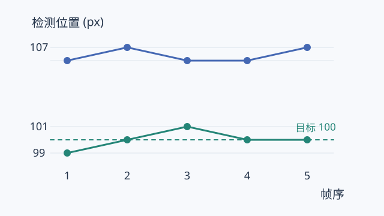
用候选线的位置窗口区分“短时抖动小”和“位置已经对准”。

左右图像中同一点的横向偏移可以换算成深度。距离越远，一像素误差的代价越大。
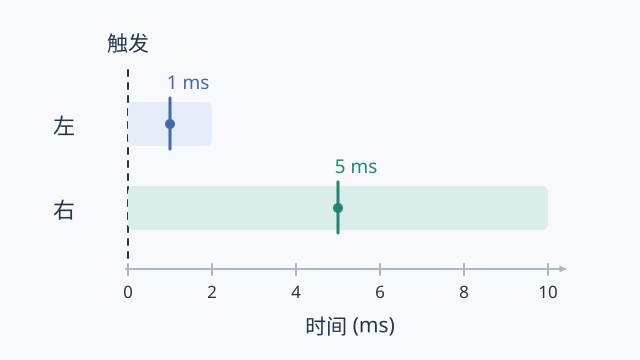
区分触发、曝光、设备时间戳和到达时间，估算时间差怎样污染立体匹配。

从左图出发找到右图，再从右图走回来，检查同一个像素能否回到起点。

四个检测角点提供图像位置，标记的真实边长为距离提供尺度。
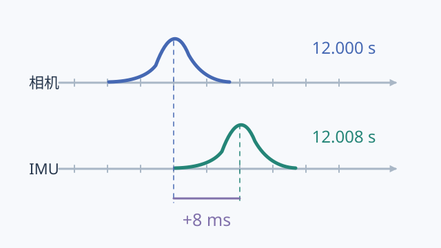
从一段转动和一个三维点开始，弄清联合标定要估计的旋转、平移与时差。
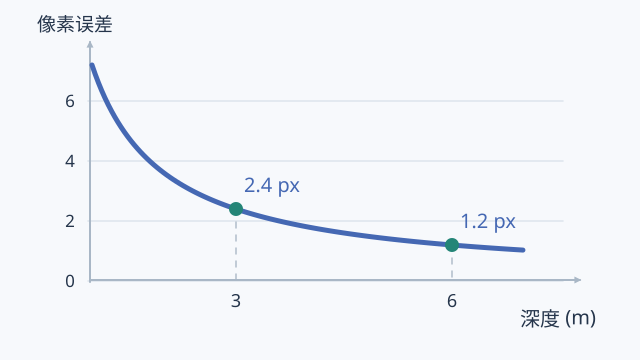
从一组三维圆心估计刚体变换，再用自然场景中的边缘检查投影。
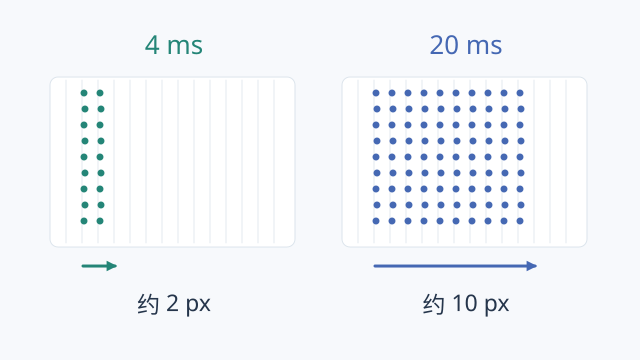
读懂一个事件的四个字段，再选择时间窗，把异步观测积成可看的轮廓。

用一把椅子练习拍摄，理解照片重叠、视差、曝光时刻与相机位姿怎样共同影响重建。
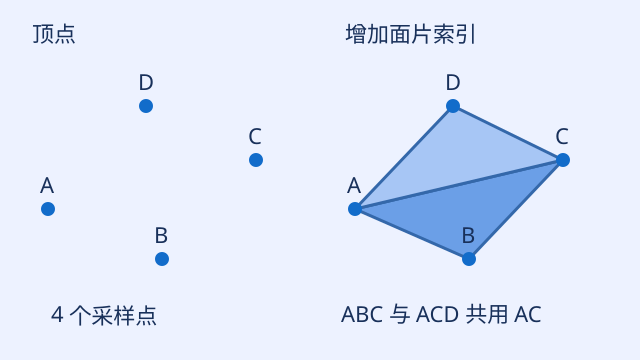
从四个角点拼出一块平板，弄清顶点、三角面、法向以及真实开口和采样空洞的区别。

一组三维色斑如何从不同角度画出同一间屋子？从一个像素的颜色混合开始，理解 3D Gaussian Splatting。
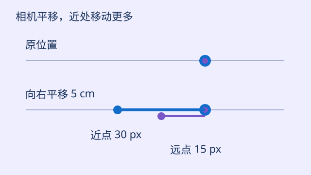
换一个观察位置，利用视差、遮挡和深度判断一块悬浮颜色的来源。

用“研究生命起源”比较两种查词方向，再看分词边界怎样影响搜索。

用三个词在两类邮件里的计数算出类别分数，再检查模型为什么会误判从没见过的邮件。
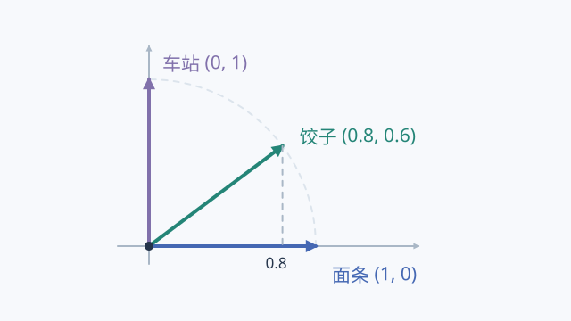
用同一句话造出两类训练题，再算一次余弦相似度，理解词向量中的“邻居”。

同一串字符既可以提供一个类别标签，也可以拆成一串“下一个字符”的预测题。
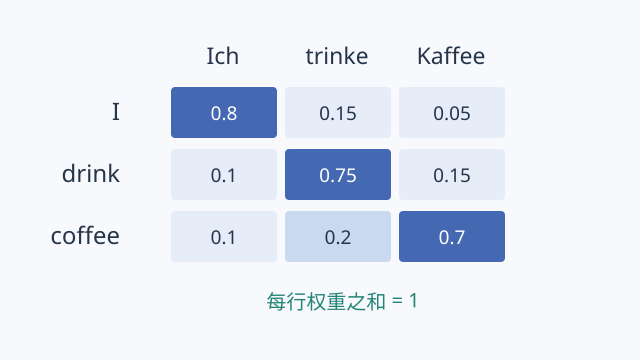
从德语短句的第一个英语词开始，理解编码器、解码器、教师强制和注意力各在哪里起作用。

跟随一条有转折的酒店评论，从分词、截断到两个类别分数，检查模型真正看到了什么。
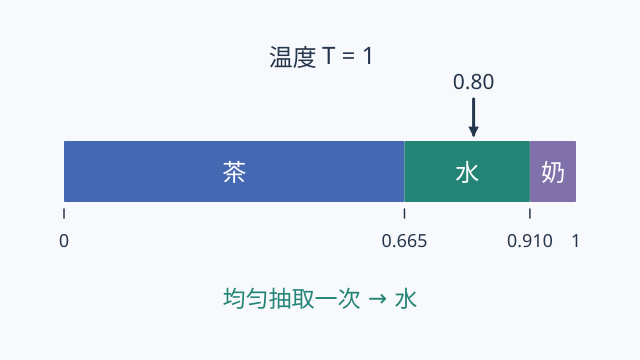
把三个候选词的分数算成概率，观察温度、top-k 和 top-p 怎样改变续写。
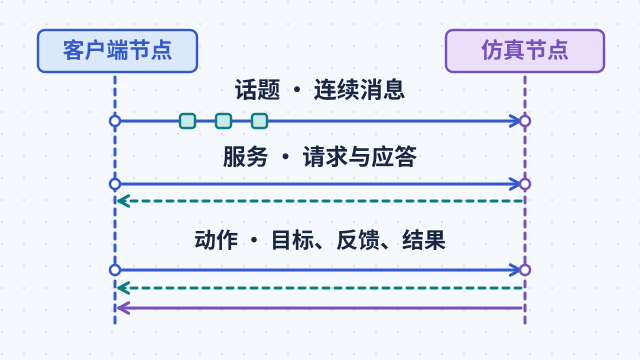
在 Jazzy 的海龟模拟器里搭一张通信图。先用话题控制速度，再调用服务、观察动作反馈，最后录下命令并验证回放。
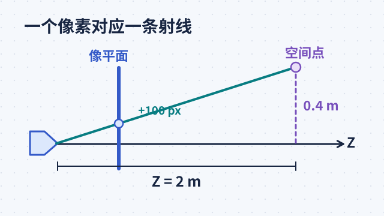
解释 RGB-D 输入的颜色、深度、内参、时间戳和坐标系，并用一个已知像素计算相机空间的位置。

从一条 15 字节的控制消息入手，计算接收缓冲区何时能交付一帧，并核对字段的字节序。

用三个重叠的 IPv4 前缀推算出口，再用 Linux 的只读查询区分选路结果和端到端连通性。

区分服务单元、操作系统进程和任务留下的效果，解释 active (exited) 与一次性启动的关系。
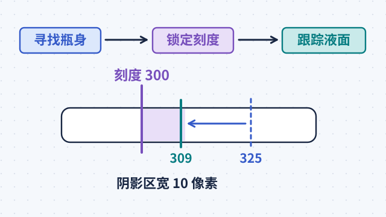
让等待、找瓶、锁定刻度和跟踪液面拥有明确的输入、转移条件和完成动作。

用位置、朝向、速度和时间窗口区分经过目标、停在目标附近，以及定位修正造成的假到达。

从刷新和双端编辑两个场景出发，决定数据存在哪里、如何识别过期响应，以及何时只恢复画面。

用每秒 25 帧的输入计算写盘积压，再区分采集时刻、视频播放速度和会话真正完成的时刻。

把请求受理、进程退出和文件可下载分开，用网格导出说明后台任务的状态模型。

用临时目录重现旧配置，依次验证首次生效、重复执行、失败与撤回后的结果。

让模型、相机、参数和坐标约定成套发布，换个目录再试一次即可发现遗留的路径依赖。
沿着头文件、链接符号和动态加载三个阶段，检查一个 C++ 库能否真正交给另一个工作空间使用。

用同一个资源名对照首页和文章页，分清相对引用、站点根路径、查询参数和页内锚点。